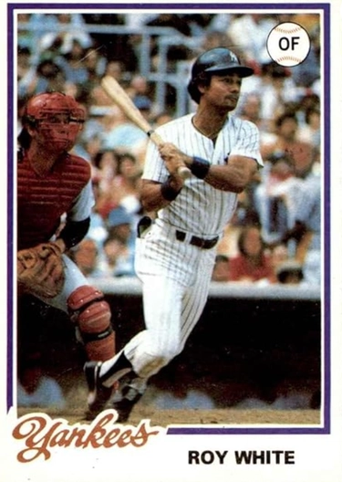

Roy White
Career Highlights & Facts
(Facts are AI-generated and may require verification)
- Developed a unique batting eye as a youth by playing a game called sock ball with a rag-stuffed ankle sock.
- Set an American League record by hitting 17 sacrifice flies in a single season.
- Provided lineup protection for a legendary Japanese home run king during a three-year career abroad.
Would you like to find out more about Roy White?
Player Biography
Roy White
January 4, 2012
/
in
BioProject - Person
1960s All-Stars
,
1970s All-Stars
/
by
admin
This article was written by
James Lincoln Ray
Roy White was a quiet, graceful leader on the New York Yankees during a transitional period in the club’s history. His strength of character and remarkable versatility enabled him to survive, and even excel, in the shark tank that is so often New York Yankee baseball. At a time when the great careers of
Mickey Mantle
,
Whitey Ford
,
Roger Maris
and
Elston Howard
were winding down, White broke into the majors and steadily evolved from speedy utility player to the team’s cleanup hitter and one of its top sluggers. During White’s early years the team was suffering its first down period in quite some time, though he stuck around long enough to help with the club’s renaissance.
Roy Hilton White was born on December 27, 1943 in Compton, California. His parents separated when he was five, leaving his mother to support Roy and his younger brother. He grew up in a working class neighborhood in Compton, a place where the sun shined every day and there were many vacant lots strewn about the neighborhood, which allowed White and his neighborhood friends to play a lot of baseball.
Actually, they played a variation of baseball that White and his pals called sock ball. “We’d take an ankle leg sock and stuff it with rags, and then we’d wrap it with tape or maybe sew it. The pitcher would stand about twenty-five feet away because the ball was so light. But you could curve it, throw a screwball,” he would later explain when asked about how he developed his batting eye and hitting style.
White attended Centennial High School in Compton, where he was a standout in baseball and football. On the diamond, he played second base and formed one-half of a very formidable double play combination with fellow future all-star,
Reggie Smith
. White had rare talent–he was a switch-hitting second baseman with great speed and moderate power who hit more than .400. During his senior year, White received numerous full scholarship offers from some of the best universities in California. UCLA wanted him to play baseball. Long Beach State University offered him a full ride to play football. But on July 1 New York Yankees scout Tuffy Hashem persuaded White to sign a minor league contract for a guaranteed salary of $6,000, with a $4,000 bonus if he made the big league club.
White struggled mightily in his early days in the minor leagues. In 1962, while playing for Greensboro’s Class A ball club, he was batting just a few points above .200 and worried that he wasn’t going to make it in baseball. According to White, he briefly considered quitting the game: “I was hitting around .210. I was sitting around one night, and saying to myself “If I can’t play baseball, what am I going to do?” Fortunately, White decided against quitting. “Then, I started to hit, and I thought, ‘if I finish at .250, I’ll be happy.’” Instead, by the end of the season White had pushed his batting average all the way up to .284.
By 1964, the Yankees promoted White to the Double-A Columbus (Georgia) Confederate Yankees. As he had done in Class A Ball, White struggled in the early going and finished the season hitting just .257. But the next year back at Columbus he broke out, hitting .300 with 19 HR and 14 triples in 139 games. For his efforts he was awarded the 1965 Southern League Most Valuable Player award.
White’s big season in 1965 led the Yankees to call him up to the big leagues when they expanded their roster in September. White saw his first major league action on September 7, 1965, when he pinch hit for
Al Downing
in the seventh inning of the first game of a doubleheader. White drove a single up the middle, and a few batters later, scored his first major league run on a
Tom Tresh
single. In the second game, White started at second base, and went 2-for-5 with a double and another run scored. The 21-year-old remained with the club for the waning days of the 1965 season, and hit .333 in 14 games.
Bust just as things were looking up for White, times were getting tough for the Yankees. After winning five straight American League pennants between 1960 and 1964, the Yankees fell to sixth place in 1965. Their biggest star, Mickey Mantle, suffered through a difficult, injury-riddled year, hitting just .255 with 19 home runs and 46 RBI. The team’s other great slugger, Roger Maris, who had hit a record 61 homers just four years earlier, managed just eight home runs and 27 RBI in an injury-riddled 1965. Whitey Ford was starting to slip. Elston Howard was contemplating retirement.
Fans hoped for a comeback in 1966, and looked to the team’s youngsters, especially White and fellow infielder
Bobby Murcer
, to pick up where the veterans were leaving off. White initially responded very well to the increased expectations. During spring training, he won the James P. Dawson Award as the best rookie in camp, and the
New York Times
remarked that White “seemed destined for a fine Yankee career, [and that] he may turn out to be cut from the same mold as Mickey Mantle or
Yogi Berra
.”
White hit well early in the 1966 season, batting .290 with five home runs through the first six weeks of the season. But he soon slumped and, according to White, it was his attempts to hit home runs that were his undoing. As he explained years later, the allure of the short porch in
Yankee Stadium
‘s right field led him to try to pull every pitch. His strikeouts increased, his hits and walks dropped, and soon White was batting a measly .240. The team fell even further, finishing in tenth (last) place in 1966, and White struggled down the stretch to close the year with a disappointing .225 batting average.
Because of his late season slump, White began the 1967 season with Triple-A Spokane. By midseason he was hitting .343 when the Yankees called him back to the big leagues. In an abbreviated 1967 season, during which he had just 214 at-bats, White hit .224 with 7 home runs and 20 RBI.
During the 1968 season, Roy White finally found his place on the Yankees. Forced to start the season without a definite position or a set spot in the batting order, White was used as a pinch hitter and a defensive replacement in the early going. By the end of May, he was playing so well that manager
Ralph Houk
felt compelled to insert him as the team’s everyday left fielder.
White also found a spot in the batting order. From May through July, he’d been hitting third, in front of senior statesman Mickey Mantle. But on August 13, 1968, Ralph Houk moved White into the cleanup spot, and shifted Mantle to third. The move was questioned by many New York sportswriters who were fond of Mantle and saw the move as a sleight to the future Hall of Famer. But as White later explained, Houk had good reason to make the change. “The other teams were walking Mickey a lot, so Ralph Houk decided to hit Mickey third and me fourth.”
For the season, White batted .267 with 17 home runs and 62 RBI. At first blush those numbers appear respectable, but when viewed through the prism of 1960s baseball, which was a time period dominated by pitching, they are actually quite impressive. White’s .267 batting average was 37 points higher than the American League average of .230. His 62 RBI were the most of any Yankee, and only Mantle, who hit 18 home runs, surpassed White’s total of 17. In fact, White’s season was so good that when the baseball writers voted for American League MVP that fall, the Yankee youngster finished in 12th place.
By the spring of 1969, all of the Yankee greats from the early 1960s were gone. Mickey Mantle and Whitey Ford had retired. Roger Maris had been sent to the Cardinals in 1967, and had hung up his spikes for good before the start of the 1969 season. Elston Howard had been dealt to Boston in 1967 and had since retired as well. Times had changed, and leadership of the Yankees now shifted to players like
Mel Stottlemyre
,
Fritz Peterson
,
Horace Clarke
, Bobby Murcer and Roy White. The team finished in fifth place with an 80-81 record. Despite the rough transition that the Yankees were experiencing as a team, Roy White continued to improve every aspect of his game.
By mid-July 1969, he was hitting .320 and was named to his first All-Star team. White finished the year hitting .290, and he drew 81 walks to yield an impressive on-base percentage of .392. Although he hit just seven home runs, Roy increased his doubles to 30 and his RBI to 74.
By 1970, White had become a fixture in the middle of the Yankees batting order. All but one of his at-bats that season came from the third or fourth spot in the batting order. He filled the role of slugger nicely, batting .296 with 30 doubles, 6 triples, 22 home runs and 94 RBI. He also stole 24 bases and drew 95 walks, which helped him to a .387 on-base percentage. White finished third in runs scored in the American League, with 109. In July, he was named to his second straight All-Star game, and when the season ended, baseball writers placed him 15th in MVP voting.
Perhaps the best assessment of White’s balance and versatility came from his former teammate Mickey Mantle, who after the 1970 season wrote an article for
Sport
magazine that ranked White as one of the most underrated players in baseball. Mantle was particularly impressed with White’s ability to do the important things that might not always show up in the box score, but which often contribute to winning the game. “People ask me: what happened to all the Yankee stars? I tell them that Roy White is as good a player as any of the old players we used to have.” In support of his statement, Mantle noted that White “hit for power and average, walked a lot, and he also could steal bases, sacrifice, hit behind the runner, and play the field well.”
Despite his great season, there were still many Yankee followers who had trouble adjusting to a Yankee cleanup hitter who wasn’t nearly capable of the 50 home runs that fans came to expect from players like
Ruth
,
Gehrig
and Mantle. A 1971
Sport
magazine article entitled “The Yankees Have a Cleanup Hitter Who Chokes the Bat” drove home the point. In the piece, White acknowledged that he was not cut from the same mold as Ruth,
DiMaggio
or Mantle, but explained, “my style is to hit the ball up the middle and to the opposite side. Not to pull–when I try to pull, I overswing and I’m pulling my head away from the ball.”
Regardless of his hitting style, no one complained about the results. He finished the 1971 season with a .292 batting average, 19 home runs and 84 RBI. He also set a new American League record for sacrifice flies with 17. White followed up that year with another solid performance in 1972, a year when he hit .270, led the American League in walks (with 99), and finished fourth in doubles. Although his power numbers dipped a little, hitting just 10 homers and collecting 54 RBI, White’s speed picked up some of the slack as he finished ninth in the league in steals and eighth in runs scored.
Despite White’s steady performance, however, the Yankees continued to struggle. Although the team finished second in 1970, over the course of the next two years, the Bombers dropped back to fourth place and barely broke the .500 mark. But it wasn’t just the team that was suffering. It was the whole organization. Attendance for the Yankees had dropped throughout the 1960s, from 1.7 million in 1960 to 1.3 million the year before CBS bought the team, and kept falling during the CBS reign. In 1972, just 966,328 people went to the old ballpark to see the Yankees play. Yankee Stadium, which had been completed in 1923 and hadn’t undergone any meaningful renovations in a half-century, was beginning to crumble. But alas, the cavalry was coming, and it was being led by a Cleveland-area shipping magnate named George M. Steinbrenner, III. On January 3, 1973, Steinbrenner led a group of investors who purchased the Yankees for $10 million from CBS.
Over the next three seasons, the Yankees rebuilt their Stadium and restocked their team. By the time the “new” Yankee Stadium opened for the start of the 1976 season, the Yankees were flush with new stars, players that Steinbrenner had acquired through aggressive trades and during the nascent days of free agency.
Graig Nettles
came over in a trade for the 1973 season. First baseman
Chris Chambliss
joined him in the Bronx to in early 1974. Five time 20-game winner
Catfish Hunter
arrived in 1975.
During this time of transition, Roy White served as a steady presence in a sea of new and constantly-changing faces. He struggled in 1973, and when his slump ran into the 1974 season, manager
Bill Virdon
tried to make White a part-time designated hitter, which was something he despised. “I didn’t like that,” White told reporters in 1976, “other teams think you can’t play anymore.” Despite hitting .275, White’s power numbers dropped drastically. After averaging 17 homers and 74 RBI during the four previous seasons, White hit just 7 home runs with 43 RBI, and at some point, he even demanded to be traded from the only major league team he had ever known.
But by mid-1975, Steinbrenner fired Virdon and replaced him with
Billy Martin
, a manager who knew how to use White’s talents better than any of his previous skippers. Martin ended the designated hitter experiment and re-installed White in left field. He also moved the veteran back into the number two spot. White explained why he liked Billy, and liked the changes that Martin demanded from him. “[I] fit into Billy’s mold. I have speed, I’m a base stealer, I’m a switch hitter, and I’m able to move runners along — things that are very important to the way Billy manages.” White spent the next three years in left field and worked mostly out of the two spot in the batting order. The adjustments seemed to re-energize the 32-year old, who in turn helped the Yankees return to their former greatness in the coming years.
The 1976 season saw the re-emergence of White as a valuable player and the Yankees as an American league powerhouse. Comfortable with a secure position in the field and a batting spot worthy of his skills, White had his best all-around season in five years. Batting behind
Mickey Rivers
and in front of 1976 American League MVP
Thurman Munson
, White hit .286, led the A.L. in runs scored with 104, finished fourth in walks with 86, stole a career-high 31 bases, and had 19 combined sacrifice flies and bunts.
White’s first playoff series came against
Whitey Herzog
‘s Kansas City Royals, a team that featured American League batting champion
George Brett
. In the first game, White came through in the top of the ninth with a big two-out double that knocked home two runs and clinched the win for New York. Five days later, with the series knotted at two wins apiece, White’s single, two walks and two runs helped the Yankees get into a position to win the game on Chris Chambliss’s dramatic home run to lead off the bottom of the ninth inning. In five games, he hit .294, and his ALCS record five walks upped his OBP to .455. White also had three doubles, three RBI and scored four runs in the series.
White followed up his great ALCS showing with a disappointing World Series. The Cincinnati Reds, the famed Big Red Machine that featured
Pete Rose
,
Johnny Bench
,
Joe Morgan
and
Tony Perez
, crushed the Yankees in a four game sweep, and White hit just .133. The Series loss made it clear to Steinbrenner that the Yankees were close, but they were still one step from the top of the mountain. After the 1976 season the Yankees rewarded White with a three-year deal, which was the first multi-season contract of his career.
The 1977 season shaped up as a three-team race among the Yankees, Orioles and Red Sox. On August 10 the Yanks were five games back, and were struggling to stay in third place. But they won 24 of their next 27 games, and by the first week of September, New York was in first place by four games. They held onto the lead, and eventually clinched the American League East on the next-to-last day of the season. White finished the year with his numbers slightly down from his ’76 revival, batting just .268, but with 14 home runs, 18 stolen bases and 72 runs scored.
Martin used White sparingly in the 1977 postseason. In eleven postseason games, the veteran left fielder came to the plate just seven times, hit .294, with two doubles and two runs scored. The Yankees eventually won the World Series, their first title in fifteen years, when
Reggie Jackson
hit three home runs in
Game 6
to sink their age-old rivals, the Los Angeles Dodgers, 4 games to 2.
In 1978 White became a part-time player, sharing left field with
Lou Piniella
. In 346 at bats, he hit .269 with eight home runs in a very tumultuous but ultimately successful season. White was a key part of the team’s success down the stretch, when they caught the Red Sox. In September, he played 24 games, hit .337 and posted an on-base percentage well over .400. The two teams finished the season tied with 99-63 records. In
the one-game playoff
at
Fenway Park
, the Yankees trailed 2-0 entering the top of the seventh inning. With one out and Chris Chambliss at first base, Roy White drilled a single to centerfield, setting up light-hitting shortstop
Bucky Dent
‘s dramatic home run, the key blow in the 5-4 Yankee victory.
White batted .313 in the playoffs against the Royals, getting at least one hit and scoring at least one run in each game, and most importantly, homering in the decisive fourth game. White also hit .333 (8-for-24) with a home run in the World Series victory over the Dodgers, capping a great October.
When White arrived at spring training in March of 1979, he was hoping the Yankees would quickly offer him an extension. But general manager
Al Rosen
announced early in spring training that the Yankees would not talk about an extension or a new contract with their veteran left-fielder until the season was over. This frustrated White, and angered a lot of his teammates.
Willie Randolph
expressed his frustration with ownership, saying: “It happens every year. I don’t think it’s fair for him to always come to spring training and go through this. Just let him play. He’s proven himself over and over again.”
Reggie Jackson hit the nail on the head when he described how White’s contributions to the team, although essential, were sometimes overlooked: “Sometimes management can’t accept his kind of player because they’re looking for loud players, guys who do things in a big way. If you really don’t watch him, and you really don’t figure out what he does, he can easily be overlooked. But his biggest asset to the club, is that here’s a guy who’s going to do his job and not make mental mistakes, a guy who will bunt, hit a grounder to the other side to advance a runner, hit a sacrifice fly, get you a quiet single and get on base.”
The 1979 season turned out to be a letdown for the Yankees after their three straight pennants. By mid-season, they were struggling and in fourth place, fourteen games behind the Orioles. This year there would be no historic comeback. Then, tragically, on August 2, 1979, team captain Thurman Munson died while trying to land his private plane. Things were changing dramatically as another decade came to a close. After he hit just .215 in 205 part-time at bats, the Yankees didn’t negotiate with White after the season, so he looked for a new home on the free agent market.
Although the 15-year veteran received offers from several big league clubs, he surprised many in baseball when, on February 17, 1980, he signed a multi-year contract to play with the Yomiuri Giants of Japan’s Central Professional League. While American youngsters and veterans alike had been playing in Japan for years, no player with as much experience or success in the Major Leagues as White had ever done so.
“I had three or four offers to stay in the big leagues,” White said, “but I was looking for a different experience. I felt I had had everything good happen to me with the Yankees – I played in the World Series and the All-Star Game – and I felt there was nothing else to experience in the major leagues in the United States.” But it was clear that White was saddened by leaving the only professional team with whom he’d ever played. “I must say, that it is with deep regret that I leave the New York Yankees, and their great and loyal fans who have supported me throughout my career.”
The Yomiuri Giants were the best team in the Japan. They had won 21 league titles in the twenty-nine seasons before White joined the club, and had earned the nickname “The Yankees of Japan.” Their most celebrated player was the all-time Japanese home run king
Sadaharu Oh
, who was entering the final season of his magnificent career when White arrived in Tokyo in the spring of 1980.
Oh had already clubbed 839 home runs when the Giants’ manager informed White that he would be hitting fourth, and Oh would bat third, so that the aging slugger would have more lineup protection. It was the second time in White’s career that he provided lineup protection for a baseball legend and a national treasure, and he quickly proved that he wasn’t intimidated by such historic company. In his very first game in Japan, on April 5, 1980, White hit two home runs and drove in two RBI against the Yokohama Taiaya Whales.
It was just a sign of things to come for the former Yankee. White played very well in his debut season. He made the All-Star team and finished the season hitting over .300 with 29 home runs and 106 RBI. The next year White hit 23 home runs and helped the Giants to the Japan Series against the Nippon Ham Fighters, a series the Giants won in 6 games.
As had happened throughout much of his Yankee career, White found himself in a part-time role for much of the 1982 season. But by mid-June, he was back into the lineup, and hit .330 the rest of the way, finishing the season at .296 with 12 home runs in limited play. All tolled, White finished his three-year stint in Japan with a .296 batting average, and averaged more than 20 home runs per season.
Just before his retirement from playing, White reflected on his years in Japan with a sense of pride and accomplishment. “I went there with more big-league time than any previous player. I’d spent 14 years with the Yankees, going on 15. My first season was Sadaharu Oh’s last, and he hit 30 home runs. Now he’s the assistant manager. My second year, the Giants won the Central League pennant, the Japan Series, won it all.”
After White hung up his spikes for good, he returned to America and to the New York Yankees, this time to serve as a coach. Upon his return, White explained how he had never lost touch with his former team, even while he was playing halfway across the world. ”I spoke to Mr. Steinbrenner last year and this year,” White said. ”Both times he expressed a desire for me to come back. He said the door always was open. I always felt I eventually would come back to the Yankees.” And he did, serving as the team’s hitting coach between 1983 and 1986.
Over the course of the next decade, White spent some time in the Yankee front office as assistant to the general manager, where he worked as a roving minor league instructor and scout for the Yankees, providing long range reconnaissance on far east talent like
Hideki Matsui
.
In 1999, White worked in the Oakland Athletics organization, serving as the batting coach for their AAA affiliate, and tutoring such players as future American League Rookie of the Year
Bobby Crosby
. As batting coach, White helped the team to two AAA championships in five seasons.
White again returned to the Yankees in 2004, and spent the next three seasons in various coaching and instructing capacities. Perhaps the greatest moment of his post-playing days came when the Yankees traveled to Japan to play an exhibition game against the Yomiuri Giants.
On the morning after the Yankees arrived in Japan, while he was eating breakfast at the New Otani hotel in Tokyo, a long line of his fans waited patiently outside. In a strange but satisfying dichotomy, some were holding cards from White’s playing career with the New York Yankees, others clutched cards from his days with the Yomiuri Giants. As he sat patiently and signed more than one hundred autographs for his fans, White told American and Japanese reporters:
“I had a few people say, `You were my favorite player when I was 10 years old. I always felt I played for two teams that were the most known and I’m kind of proud of that in my career. It’s probably one of the reasons I didn’t play with another team when I came back to the U.S. I felt I had one or two years left – I had hit .300 in my last year in Japan and I was 39 years old and my legs felt good – but I spoke to some friends who I really respected. They told me I should stay with just the two teams and I agreed with them. Very few players now can say they did that.” Looking over the crowd of autograph seekers, White smiled as he said: “”I was probably more popular in Japan than I was in America.”
As of 2008 Roy had been married to his wife Linda for 41 years and resided in Toms River, New Jersey. They have two children: daughter Loreena, a graduate of Brown, and son Reade, who is a successful independent Public Relations and Marketing Consultant and New York University graduate.
White’s accomplishments, however, are not limited to baseball, or even to his devotion to family. For years he has also been heavily involved in philanthropic work, and most recently, he created the Roy White Foundation. The Foundation is a non-profit organization which provides financial assistance to young adults and children whose desire to further their education is inhibited by financial complications. The mission of the charity “is to help such individuals pursue their dreams and aspirations by easing the frustrating burden of monetary obligations.”
The Foundation has been a rousing success, attracting such luminaries of sport, business, and philanthropy such as: famed designer Joseph Abboud, former Yankee Graig Nettles, and Jim Oscatello of USA Financial Services. Since its inception, the Foundation has helped many students with financial assistance for higher education, including granting fifteen college scholarships to high school students in 2003. The Foundation continues its good work to this day with the support of thousands of members.
Sources
The Sporting News
, Volume 166, No .2 (7/27/68), “Sock Ball in Backyard Helps White Develop Batting Eye” by Jim Ogle.
The Sporting News
, Volume 166, No. 7 (8/31/68), “Houk Tells Why He Put White into Cleanup Spot” by Jim Ogle.
Sport
, Volume 50, No. 2 (August 1970), “The American League’s 9 Most Underrated Players” By Mickey Mantle as told to John DeVaney.
Sport
, Volume 51, No. 5 (May 1971) “The Yankees have a Cleanup Hitter Who Chokes the Bat” by John DeVaney.
New York Times
, Jul 18, 1967, “Yanks Beaten by orioles, Call up White for More Punch” by Leonard Koppett.
New York Times
, August 10, 1976, “Lessons for Hitters” by Leonard Koppett.
New York Times
, September 25, 1976, “The Yankees Invisible Left Fielder” by Dave Anderson.
New York Times
, September 27, 1976, “Yankees Return to the Top” by Murray Chass.
New York Times
, October 10, 1976, “The Yankee Revolution” by William Barry Furlong.
New York Times
, March 5, 1979 “White’s Future in Doubt” by Murray Chass.
New York Times
, April 5, 1980, “Roy White a Hit in Japan Debut” by AP staff writer.
New York Times
, January 7, 1983, “White Returns to Yanks” by Murray Chass.
Daily News
(New York), March 27, 2004, “Fans Remember Roy White From His Japan Days” by Anthony McCarron.
Roy White Foundation Home Page
Baseball-Reference Roy White Pages
Full Name
Roy Hilton White
Born
December 27, 1943 at Los Angeles, CA (USA)
Stats
Baseball Reference
Retrosheet
Tags
1960s All-Stars
·
1970s All-Stars
·
Career Totals
| WAR | AB | H | HR | BA | R | RBI | SB | OBP | SLG | OPS | OPS+ |
|---|---|---|---|---|---|---|---|---|---|---|---|
| 46.8 | 6650 | 1803 | 160 | .271 | 964 | 758 | 233 | .360 | .404 | .764 | 121 |
Statistics via Baseball-Reference.com
The Original Clue